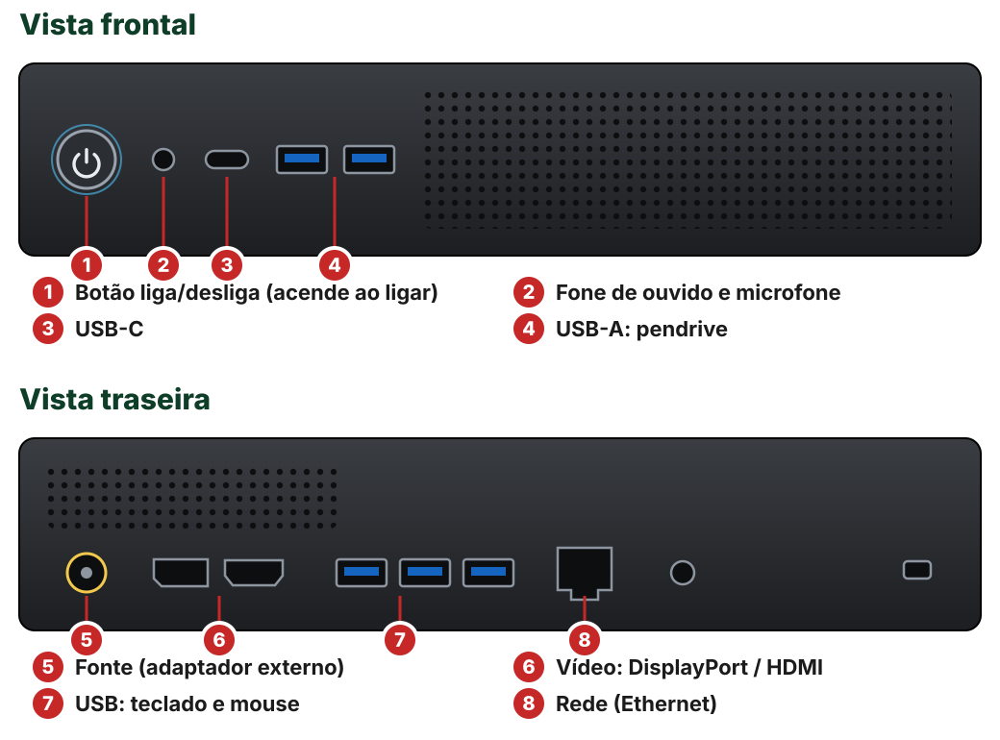
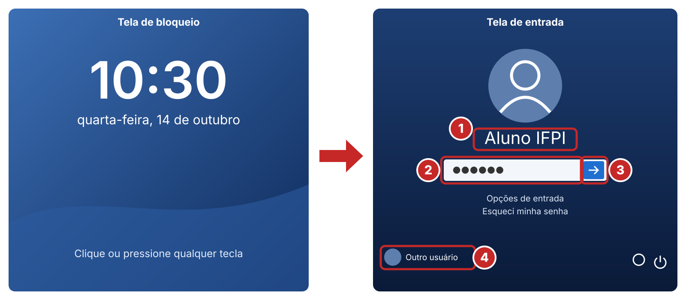
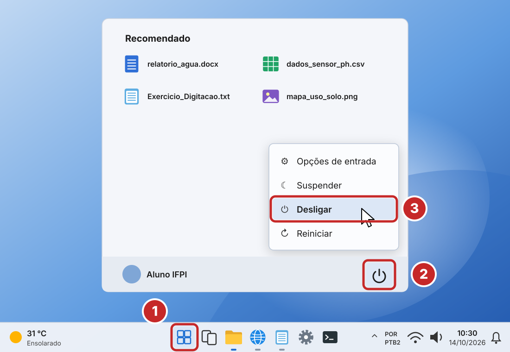
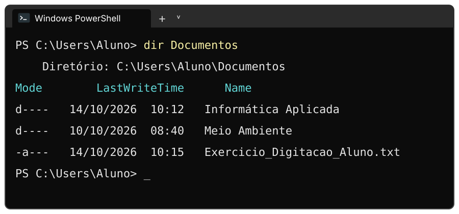
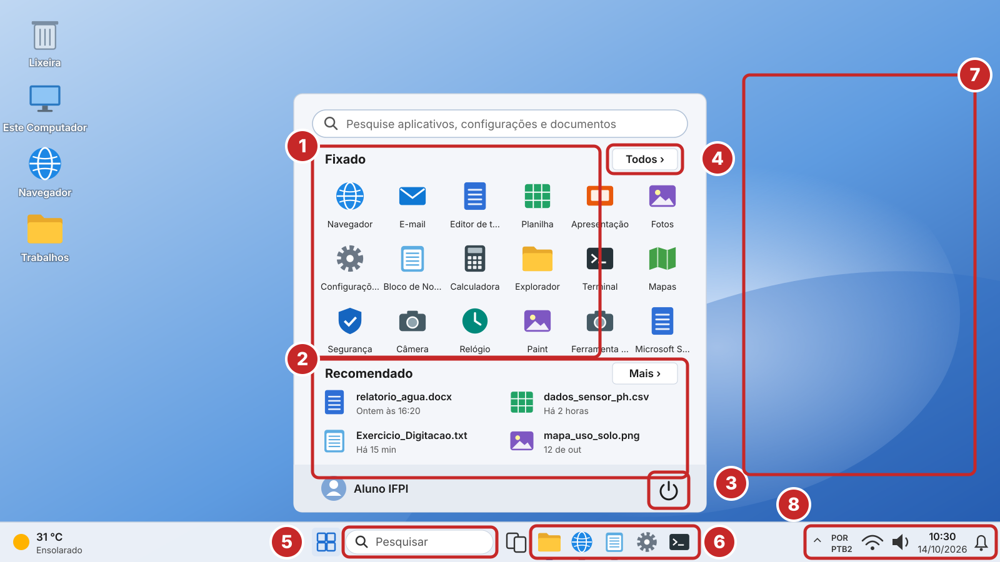
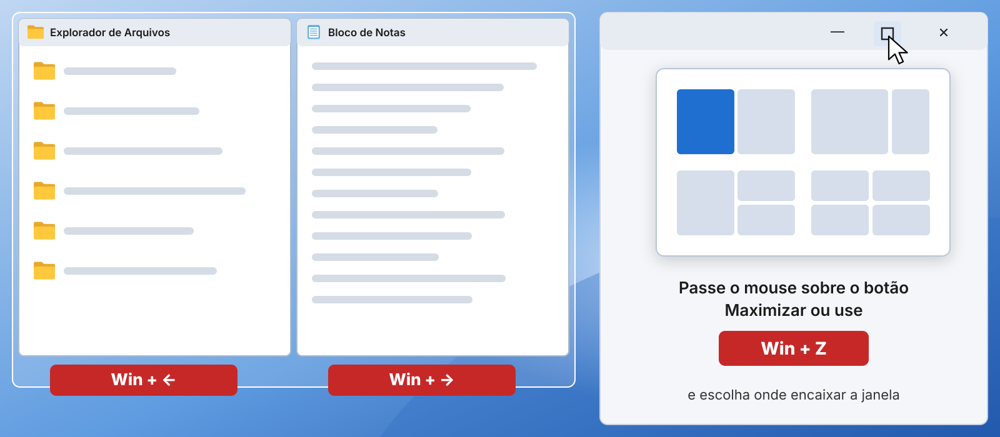
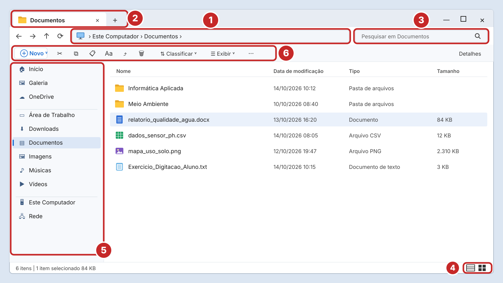
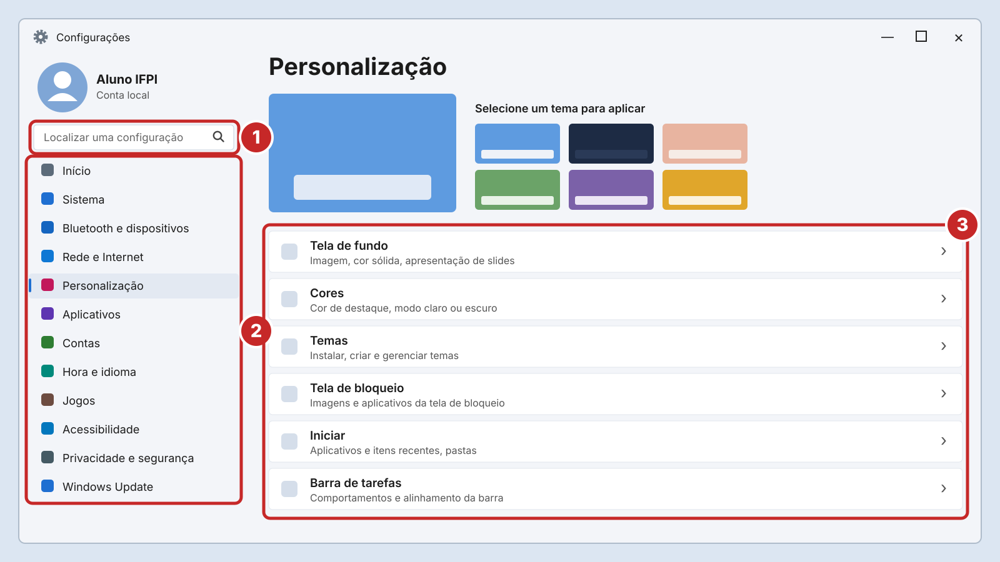
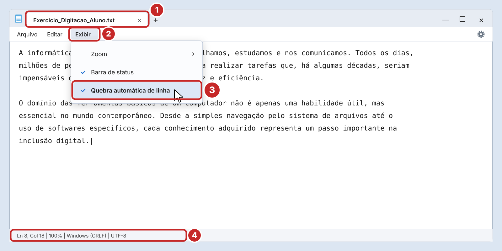
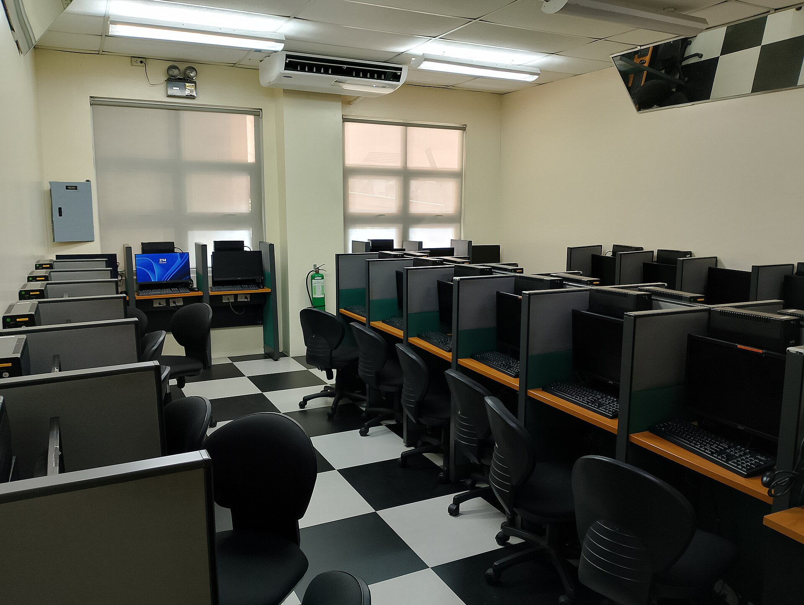

Técnico em Meio Ambiente · 1º Módulo · 2026/2
Prof. Diego Cordeiro de Oliveira
Promover uma educação de excelência, direcionada às demandas sociais.
Por que proteger dados e contas, quais são os golpes mais comuns e as atitudes que evitam a maioria dos problemas.
O que é um sistema operacional, quais são as suas funções e quais sistemas existem no mercado.
Ligar e desligar o mini PC Lenovo ThinkCentre, entrar no sistema, conhecer as interfaces e a área de trabalho.
Gerenciar pastas e arquivos, usar as ferramentas do sistema, personalizar o computador e fazer a atividade no Bloco de Notas.
Uma conversa rápida de conscientização: o que pode dar errado e como se proteger no dia a dia.
incidentes de segurança foram notificados ao CERT.br em 2024 — o Centro de Estudos, Resposta e Tratamento de Incidentes de Segurança no Brasil.
Incidente de segurança é qualquer evento que prejudique os ativos (sistemas, equipamentos e informações), como um acesso sem autorização.
Só quem tem autorização pode ver a informação.
Quebra: sua senha ou suas notas vazam para outra pessoa.
A informação não é alterada nem destruída sem autorização.
Quebra: alguém altera os valores de um laudo de qualidade da água.
A informação ou o serviço está acessível sempre que alguém autorizado precisa.
Quebra: o SUAP fora do ar no último dia de entrega.
Garante a identidade de quem acessa: senha, PIN, digital, reconhecimento facial ou código no celular.
Os sistemas registram as ações; quem fez algo usando a sua conta não consegue negar a autoria, por isso, sua conta é responsabilidade sua.
| Ameaça | Como funciona | Sinal de alerta |
|---|---|---|
| Phishing | Mensagem falsa (e-mail, SMS, WhatsApp) que imita um banco, loja ou a própria escola para roubar senhas, cartões e dados bancários. | Urgência, ameaça de bloqueio, link estranho, erros de português. |
| Malware (vírus, cavalo de Troia) | Programa malicioso que danifica o dispositivo, espiona ou rouba informações. | Anexo inesperado, programa "crackeado", arquivo .exe disfarçado. |
| Ransomware | Tipo de malware que sequestra os arquivos (criptografa) e cobra resgate. | Arquivos que não abrem mais e aviso pedindo pagamento. |
| Engenharia social | Golpista engana a pessoa, não o computador: falso suporte técnico, falso parente pedindo PIX. | Pedido de código recebido por SMS, de senha ou de transferência. |
| Senhas fracas ou vazadas | Senhas curtas ou repetidas são adivinhadas ou testadas com listas de vazamentos. | Avisos de login desconhecido na sua conta. |
O hacker é quem tem profundo conhecimento técnico e pode usá-lo para descobrir e corrigir falhas; o cracker usa esse conhecimento com intenção maliciosa para invadir sistemas e violar a sua integridade.
A LGPD (Lei nº 13.709/2018) regula o uso de dados pessoais por empresas e órgãos públicos.
Pense antes de clicar: toque em cada situação para revelar a resposta.
Acesse o mapa de ameaças em tempo real e descubra qual foi o malware mais detectado no Brasil no último mês.
Fundamentos, funções, sistemas existentes e a prática com o Windows 11 no laboratório.
O sistema operacional (SO) é o software básico que fica entre o usuário, os aplicativos e o hardware: ele gerencia a máquina e oferece uma forma de usá-la.
Cada músico (programa) quer tocar ao mesmo tempo; o SO é o maestro que decide quem usa o processador, a memória e os dispositivos em cada momento, para que tudo funcione em harmonia.
| Função | O que faz | Onde você vê no Windows 11 |
|---|---|---|
| Gerenciar processos | Divide o tempo do processador entre os programas abertos. | Gerenciador de Tarefas › Processos |
| Gerenciar memória | Reserva e libera a RAM que cada programa usa. | Gerenciador de Tarefas › Desempenho |
| Gerenciar arquivos | Organiza os dados no disco em pastas e arquivos. | Explorador de Arquivos |
| Gerenciar dispositivos (E/S) | Controla teclado, mouse, monitor, impressora e rede por meio dos drivers. | Configurações › Bluetooth e dispositivos |
| Segurança e usuários | Controla contas, senhas e permissões; protege contra ameaças. | Contas · Segurança do Windows |
| Interface com o usuário | Oferece a forma de interação: gráfica, por texto, toque ou voz. | Área de trabalho, menu Iniciar, Terminal |
Driver é um pequeno programa que "ensina" o sistema operacional a conversar com um dispositivo específico, como uma impressora ou uma placa de vídeo.
| Sistema | Quem desenvolve · licença | Onde é usado |
|---|---|---|
| Windows 11 | Microsoft · proprietário (licença paga, em geral já vem no computador) | O mais usado em computadores pessoais e de escritório, é o do nosso laboratório. |
| Linux (Ubuntu, Linux Mint, Debian, Fedora) | Comunidade e empresas · software livre e, em geral, gratuito | Servidores, nuvem, todos os supercomputadores do mundo e computadores pessoais. |
| macOS | Apple · proprietário | Computadores Mac. |
| ChromeOS | Google · proprietário, baseado em Linux | Chromebooks, muito usados em escolas. |
| Android | Google · base de código aberto (núcleo Linux) | Celulares, tablets, TVs e equipamentos embarcados. |
| iOS / iPadOS | Apple · proprietário | iPhone e iPad. |
O suporte do Windows 10 terminou em 14/10/2025: ele não recebe mais correções de segurança gratuitas. Por isso os computadores do laboratório usam o Windows 11.

Se nada acontecer, confira se a luz do botão acendeu e se a fonte externa está ligada na tomada e no computador antes de chamar o professor.

Nunca compartilhe suas credenciais. Ao terminar, saia da conta ou bloqueie com ⊞ Win + L.

Não desligue pelo botão nem na tomada: arquivos abertos podem ser corrompidos. Só se o sistema travar de vez, segure o botão por alguns segundos.
Janelas, ícones, menus e ponteiro: você aponta e clica. É a forma padrão no Windows, no macOS e na maioria das distribuições Linux.
Comandos digitados no Terminal (PowerShell ou Prompt de Comando). Muito usada por técnicos e em servidores.

Gestos na tela (tocar, arrastar, pinçar). Padrão em celulares e tablets; disponível em notebooks com tela sensível ao toque.
Ditado com ⊞ Win + H, Narrador (leitor de tela) e Lupa (⊞ Win + +) tornam o computador acessível a todos.
| Tecla | Função |
|---|---|
| Shift | Letra maiúscula ou símbolo de cima da tecla |
| Caps Lock | Liga/desliga maiúsculas permanentes |
| Ctrl Alt | Combinadas com outras teclas formam atalhos |
| AltGr | Terceiro símbolo da tecla (ex.: / ? °) |
| ⊞ Win | Abre o menu Iniciar |
| Enter | Confirma um comando ou pula linha |
| ⌫ Del | Apaga à esquerda / à direita do cursor |

| Ctrl+C | Copiar |
| Ctrl+X | Recortar |
| Ctrl+V | Colar |
| Ctrl+Z | Desfazer a última ação |
| Ctrl+A | Selecionar tudo |
| Ctrl+S | Salvar |
| Alt+Tab | Alternar entre janelas abertas |
| ⊞ Win+D | Mostrar/ocultar a área de trabalho |
| ⊞ Win+E | Abrir o Explorador de Arquivos |
| ⊞ Win+I | Abrir as Configurações |
| ⊞ Win+L | Bloquear a tela |
| ⊞ Win+V | Histórico da área de transferência |
| ⊞ Win+Shift+S | Capturar parte da tela |
| Ctrl+Shift+Esc | Gerenciador de Tarefas |

O caminho é o "endereço" do arquivo: cada \ separa uma pasta da outra ("Usuários" aparece como Users).

| Ação | Com o mouse | Pelo teclado |
|---|---|---|
| Criar pasta | Botão direito num espaço vazio › Novo › Pasta — ou ⊕ Novo › Pasta | Ctrl+Shift+N |
| Renomear | Botão direito › Renomear (ícone Aa) | F2 |
| Copiar | Botão direito › Copiar, depois Colar no destino | Ctrl+C › Ctrl+V |
| Mover | Arrastar até a pasta de destino, ou Recortar e Colar | Ctrl+X › Ctrl+V |
| Excluir | Ícone da lixeira na barra de comandos: o item vai para a Lixeira | Del · Shift+Del apaga sem passar pela Lixeira |
| Desfazer / recuperar | Abra a Lixeira › botão direito › Restaurar | Ctrl+Z |
Use nomes descritivos e, se precisar, datas no formato ano-mês-dia (2026-10-14_relatorio_agua). O Windows não aceita os caracteres \ / : * ? " < > | em nomes.
| Extensão | Tipo de conteúdo | Abre com |
|---|---|---|
| .txt | Texto simples, sem formatação | Bloco de Notas |
| .docx · .odt · .pdf | Documentos formatados | Word, LibreOffice Writer, navegador |
| .xlsx · .ods · .csv | Planilhas e dados | Excel, LibreOffice Calc |
| .jpg · .png | Imagens, fotos de campo e mapas exportados | Fotos, Paint |
| .shp · .kml | Dados geográficos (área ambiental) | QGIS, Google Earth |
| .zip | Arquivos compactados | Explorador de Arquivos |
| .exe · .msi | Programas e instaladores | Executam direto — cuidado! |
No Explorador: Exibir › Mostrar › Extensões de nomes de arquivos. Assim fica fácil perceber que foto.jpg.exe é, na verdade, um programa.
| Ferramenta | Para que serve | Como abrir |
|---|---|---|
| Configurações | Central de ajustes do computador | ⊞ Win+I |
| Gerenciador de Tarefas | Ver o uso de CPU e memória e finalizar um programa travado | Ctrl+Shift+Esc |
| Segurança do Windows | Antivírus Microsoft Defender, firewall e verificação de ameaças | Pesquisar "Segurança do Windows" |
| Windows Update | Instalar atualizações e correções de segurança | Configurações › Windows Update |
| Armazenamento | Ver o espaço livre e limpar arquivos temporários | Configurações › Sistema › Armazenamento |
| Sobre | Ver processador, memória RAM e versão do Windows | Configurações › Sistema › Sobre |
Abra o Gerenciador de Tarefas, vá em Desempenho e descubra quantos núcleos tem o processador e quanta memória RAM tem o ThinkCentre do laboratório.


Como abrir: ⊞ Win, digite bloco de notas e Enter — ou ⊞ Win+R, digite notepad e Enter.
"A informática revolucionou o modo como trabalhamos, estudamos e nos comunicamos. Todos os dias, milhões de pessoas utilizam computadores para realizar tarefas que, há algumas décadas, seriam impensáveis de serem feitas com tanta rapidez e eficiência.
O domínio das ferramentas básicas de um computador não é apenas uma habilidade útil, mas essencial no mundo contemporâneo. Desde a simples navegação pelo sistema de arquivos até o uso de softwares específicos, cada conhecimento adquirido representa um passo importante na inclusão digital.
No ambiente acadêmico e profissional, a capacidade de digitar com velocidade e precisão faz diferença na produtividade. Esta atividade tem como objetivo exercitar suas habilidades de digitação, familiarizando-se com o teclado e com a interface do Bloco de Notas, um dos aplicativos mais básicos e úteis do Windows.
O aprendizado dessas habilidades fundamentais é crucial para acompanhar as rápidas transformações tecnológicas e se manter competitivo no mercado de trabalho. Dominar o uso do computador e das principais ferramentas digitais é um diferencial que pode abrir portas e ampliar oportunidades em diversos setores.
Portanto, é essencial que todos os estudantes e profissionais se dediquem a aprimorar suas competências digitais, explorando os recursos disponíveis e praticando constantemente. Essa jornada de aprendizado contínuo irá prepará-los para os desafios do futuro e garantir sua adaptabilidade em um mundo cada vez mais tecnológico."
Pense antes de clicar: toque em cada pergunta para revelar a resposta.
Entregue o exercício de digitação na plataforma estadaí e traga, por escrito, 3 atitudes de segurança que você vai passar a adotar no seu celular ou computador.

As dúvidas de hoje são o conhecimento de amanhã.
Prof. Diego Cordeiro de Oliveira — diego.cordeiro@ifpi.edu.br